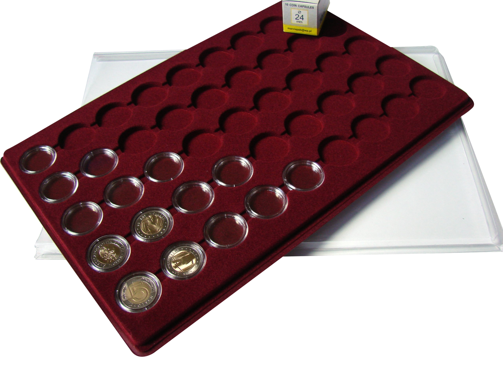

Porady numizmatyczne
Wprowadzenie do obiegu
- Od 2014 roku po zakończeniu emisji monet 2 zł NBP zaczął emitować serię monet 5 zł Odkryj Polskę.
Rocznie zazwyczaj ukazują się dwie emisje.
Sposoby przechowywania monet 5 zł
- Album z wysuwanymi paskami, dwie strony bez opisów, gdyż nie wiadomo ile monet i jakie ukarzą się w kolejnych latach, naklejki można dokleić w dowolnym czasie.
- Palety z kapslami na monety 5 zł minus nie widać drugiej strony monety zabezpieczone na palecie z zasuwka, palety można umieścić w kuferkach. 
- Blistry, czyli jedna z ciekawszych możliwości przechowywania monet. Moneta w nim jest zabezpieczona kapslem i wciśnięta do blistra z opisem. Do przechowywania blistrów dostępne są na rynku walizki aluminiowe. Po każdej emisji ukazuje się nowy blister.
- Holdery samoprzylepne z folią, która nie wchodzi w reakcję chemiczną z metalami monet, dodatkowo cechują się szczelności i odcięcie dopływu powietrza, dzięki czemu numizmaty mogą zachować swój pierwotnych wygląd, mimo wielu lat przechowywania. Holdery to najtańsze akcesorium do przechowywania bezpiecznie monet, dodatkowo dzięki ofercie holderów o najpopularniejszym rozmiarze pasują one do odpowiednich strona do segregatorów na holdery, klaserów i albumów na holdery, palet, czy kuferków.